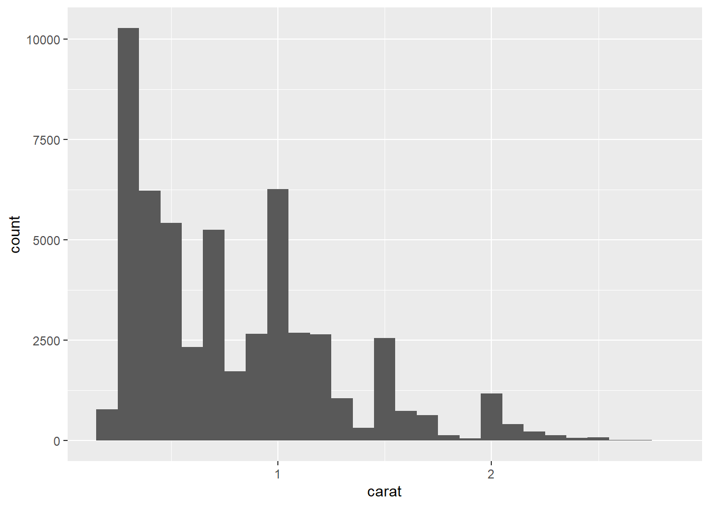
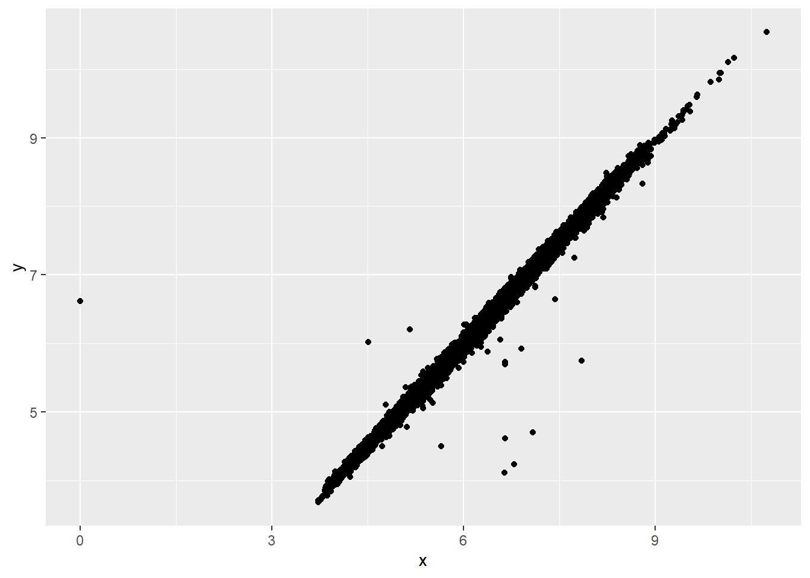
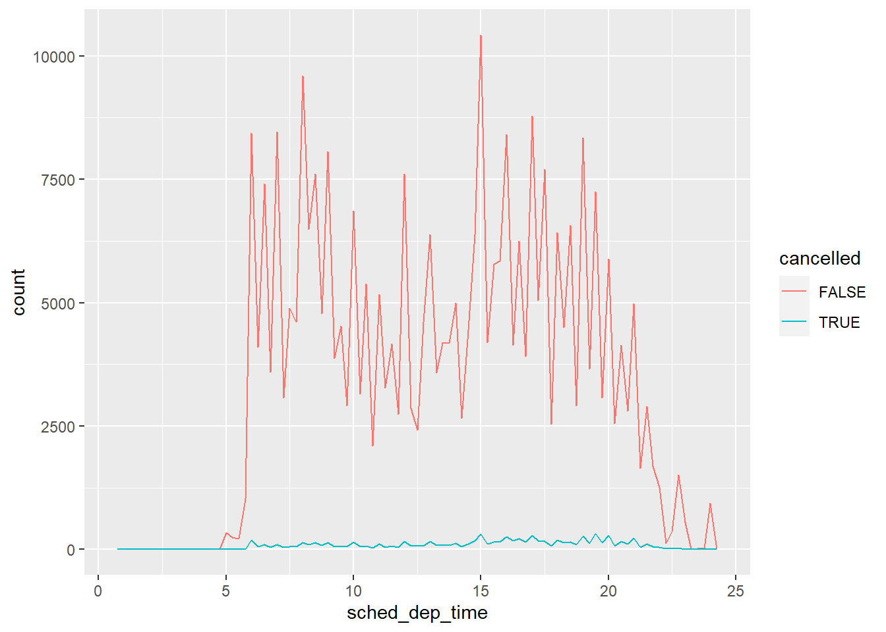
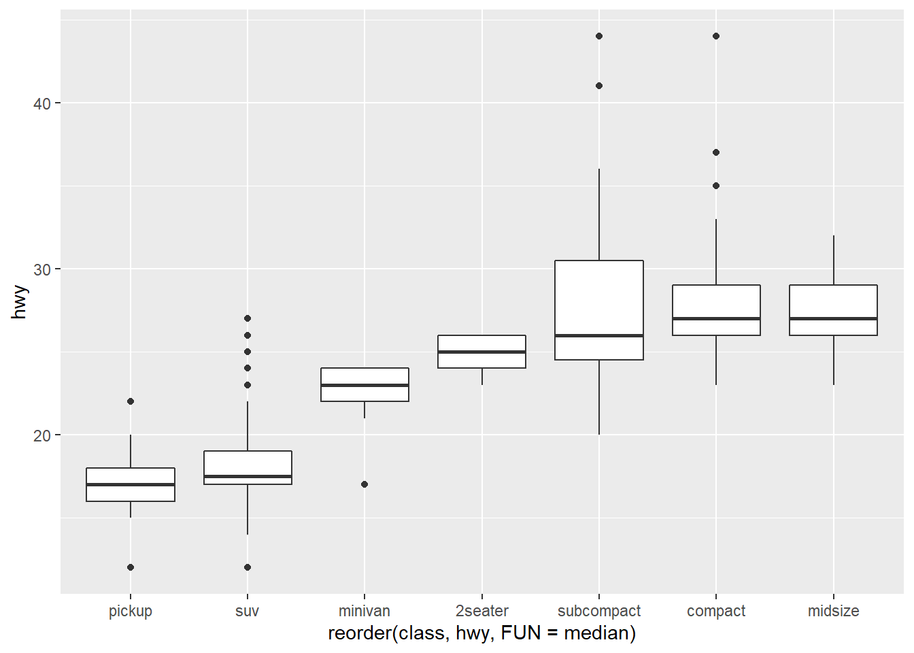
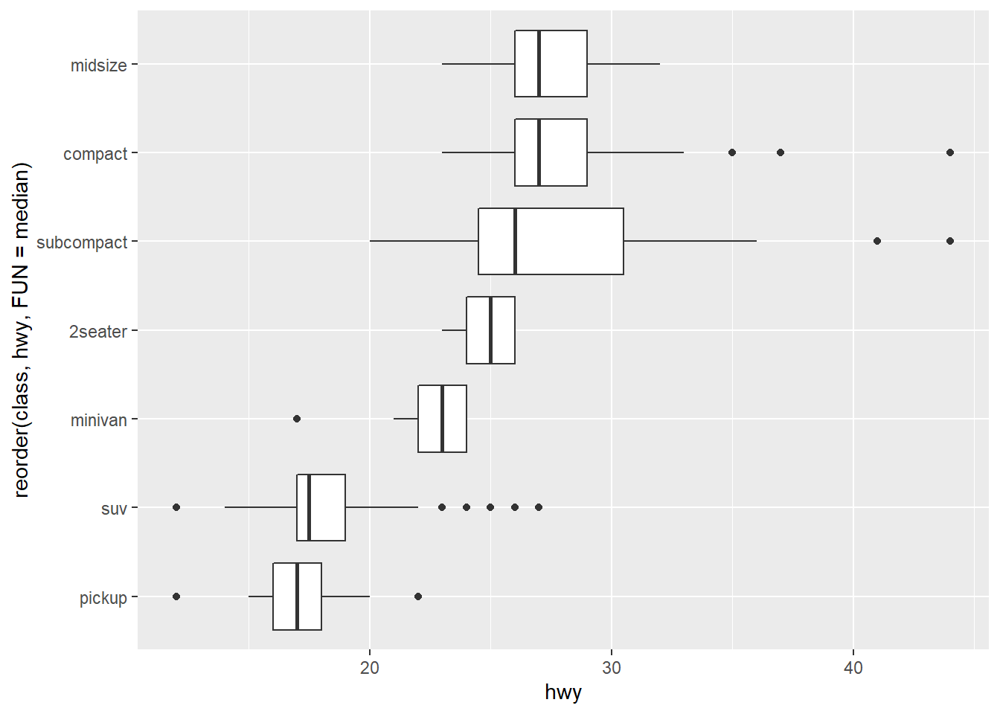
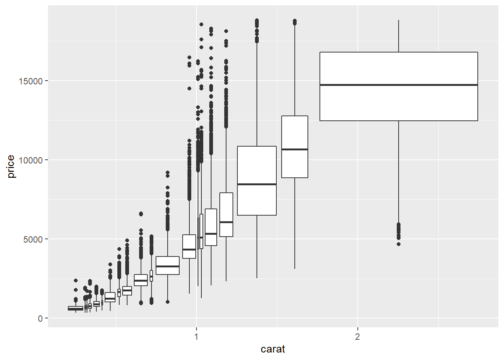
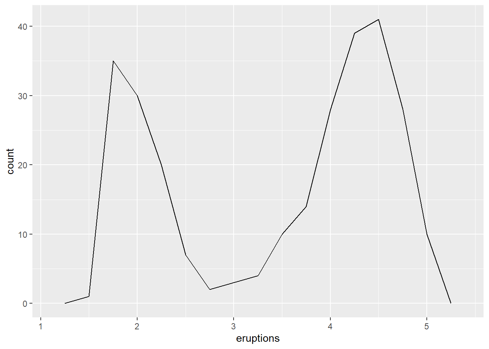
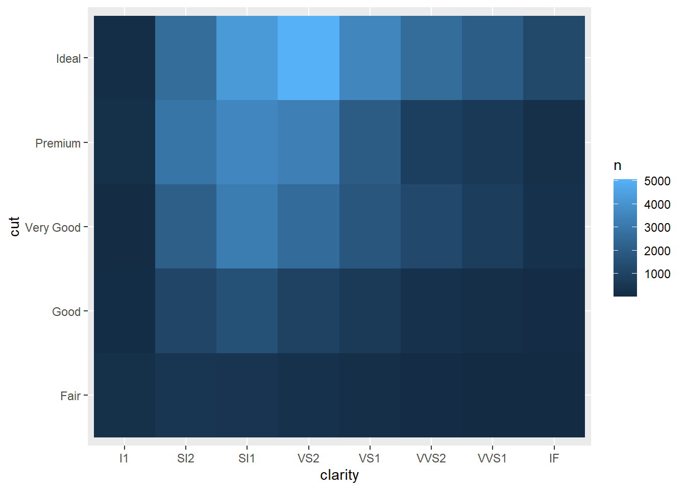

7 Explorativ analys av data
“Far better an approximate answer to the right question, which is often vague, than an exact answer to the wrong question, which can always be made precise.” — John Tukey
7.1 Introduktion
Detta kapitel handlar om hur man kan använda visualiseing och transformering för att undersöka data på ett systematiskt sätt, en process som kallas explorativ dataanalys (EDA). EDA är en iterativ process som innebär att
- Generera frågeställningar om data
- Söka svar genom att visualisera, transformera och modellera data
- Använd svaren till att förfina frågeställningarna och/eller generera nya frågeställningar
EDA är inte en formell process med en uppsättning regler utan snarare ett förhållningssätt där du inledningsvis kan pröva varje idé som kommer upp hos dig, för att skärpa frågorna allteftersom din kunskap om datamängden blir bättre.
EDA är en viktig del av varje analys, även om frågeställningarna är givna från början, eftersom man alltid behöver undersöka kvaliteten i data. Datarensning är bara en del av EDA - du ställer frågor huruvida data möter dina förväntningar eller inte.
I det här avsnittet ska vi gå igenom ett sätt att rensa data genom att använda ggplot2 och dplyr. Vi örjar med att ladda in
7.2 Frågor
Målet är att utveckla en förståelse av datamängden. Hadley/Grolemund förespråkar frågor som det mest effektiva verktyget för att vägleda EDA. Genom att formulera en fråga fokuseras vår uppmärksamhet på en specifik del av datamängden och underlättar valet av grafer, transformeringar och modelleringar.
“EDA is fundamentally a creative process. And like most creative processes, the key to asking quality questions is to generate a large quantity of questions.”
Det finns förstås inga regler om vilka frågor som ska ställas när. Men det finns två slag av frågor som ofta är användbara för att förstå data bättre. De kan löst formuleras:
- Vilken slags variation förekomemr i variablerna?
- Vilken slags samvariation förekommer mellan variablerna?
Resten av detta kapitel vrider och vänder i dessa två frågor. Låt oss börja med att definiera några begrepp: - En variabel är en kvantitet, kvalitet eller egenskap som är mätbar - Ett värde uttrycker nivån på en variabel när man mäter den och kan förändras från ett tillfälle till ett annat - En observation är en uppsättning mätningar gjorda under liknande förhållanden, vanligtvis vid ett och samma tillfälle och på samma objekt. En observation innehåller en rad värden, vart och ett knutet till en specifik variabel. - Tabulerade data är en uppsättning värden vilka är knutna till en variabel och en observation. Tabulerade data är städade (tidy) om varje värde är placerade i sin egen cell, varje variabel i en egen kolumn och varje observation i en egen rad.
Vi ska lite senare ägna tid åt att städa data.
7.3 Variation
Variation är den tendens som en variabels värden har att variera från ett mättillfälle till ett annat. Varje variabel har sitt eget variationsmönster vilket kan ge värdefull information om variabeln. Det kanske bästa sättet att förstå ett variationsmönster, en fördelning, är att visualisera det.
7.4 Visualisera fördelningar
I R behandlas kategoriska variabler vanligtvis som faktorer (factor) eller alfanumeriska vektorer (character). För att undersöka fördelningen av en kategorisk variabel används ofta ett stapeldiagram, ett bar chart:

Höjden på staplarna visar hur många observationer som fanns för varje värde på x. Det kan man förstås också räkna ut manuellt med dplyr::count():
## # A tibble: 5 x 2
## cut n
## <ord> <int>
## 1 Fair 1610
## 2 Good 4906
## 3 Very Good 12082
## 4 Premium 13791
## 5 Ideal 21551För att undersöka kontinuerliga variabler används ofta histogram:

Du kan beräkna detta manuellt genom att kombinera dplyr::count() och ggplot2::cut_width():
## # A tibble: 11 x 2
## `cut_width(carat, 0.5)` n
## <fct> <int>
## 1 [-0.25,0.25] 785
## 2 (0.25,0.75] 29498
## 3 (0.75,1.25] 15977
## 4 (1.25,1.75] 5313
## 5 (1.75,2.25] 2002
## 6 (2.25,2.75] 322
## 7 (2.75,3.25] 32
## 8 (3.25,3.75] 5
## 9 (3.75,4.25] 4
## 10 (4.25,4.75] 1
## 11 (4.75,5.25] 1Ett histogram delar x-axeln i likformigt breda bins och använder sedan höjden på y-axeln för att visa antalet observationer i varje bin. I grafen ovan innehåller den längsta stapeln nästan 30 000 observationer med ett värde på carat mellan 0.25 and 0.75, vilket motsvarar den vänstra resp högra kanten av stapeln.
Du kan bestämma bredden på intervallen i histogrammet själv genom binwidth, som anges i x-axelns enheter. Laborera gärna med flera olika bredder eftersom det kan påvisa olika mönster. Låt oss titta på ett histogram som zoomar in på diamanterna mindre än 3 karat och välj en mindre bredd:
smaller <- diamonds %>%
filter(carat < 3)
ggplot(data = smaller, mapping = aes(x = carat)) +
geom_histogram(binwidth = 0.1)
Om du vill visualisera flera histogram i samma graf är det bättre att använda geom_freqpoly() istället för geom_histogram(). geom_freqpoly() gör samma beräkningar som geom_histogram(), men istället för att använda staplar används linjer. Det är lättare att förstå linjer som överlappar varandra än staplar. Pröva:

7.5 Outliers
Outliers är observationer som sticker ut, datapunkter som inte verkar passar in i mönstret. Ibland handlar det om fel i indata, men någon gång om viktig ny information. Om datamängden är stor kan det vara svårt att urskilja outliers i ett histogram. Se t.ex. på fördelningen av variabeln y i datasetet diamonds. Den enda signalen om att det finns outliers är den oväntat omfångsrika x-axeln:

Det finns så många observationer i de mer frekventa bins att de kortare bins:en är så korta att de inte syns. Vi behöver zooma in till de små värdena på y-axeln och för det kan vi använda coord_cartesian():
ggplot(diamonds) +
geom_histogram(mapping = aes(x = y), binwidth = 0.5) +
coord_cartesian(ylim = c(0, 50))
(coord_cartesian() har också ett xlim() argument då du behöver zooma in på delar av x-axeln. ggplot2 har också xlim() och ylim() funktioner vilka fungerar lite annorlunda: de kastar bort data som ligger utanför dessa gränser.)
Här kan vi se att det finns tre outliers: 0, ~30, and ~60. Vi tar bort dem genom att filtrera:
## # A tibble: 9 x 4
## price x y z
## <int> <dbl> <dbl> <dbl>
## 1 5139 0 0 0
## 2 6381 0 0 0
## 3 12800 0 0 0
## 4 15686 0 0 0
## 5 18034 0 0 0
## 6 2130 0 0 0
## 7 2130 0 0 0
## 8 2075 5.15 31.8 5.12
## 9 12210 8.09 58.9 8.06Variabeln y mäter storleken av dessa diamanter i mm. Vi inser att diamanter inte kan ha en storlek av 0 mm så den observationen mste vara ett felvärde. Vi kan också misstänka att att diamanterna med 32 resp 59mm storlek är felvärden eftersom så stora diamanter måste vara värda miljoner.
Det är god praxis att köra analysen med och utan outliers. Om de har minimal effekt på resultaten är det rimligt att ersätta dem med missing values (NA). Men om de påverkar resultaten behöver man förstås fundera på vad som orsakade dessa värden och redovisa det på lämpligt sätt.
7.6 Övningar
- Undersök fördelningen av
x,yochz-värden idiamonds. Samband? - Undersök fördelningen av priset. Något som förvånar/överraskar? (använd flera värden på
binwidth) - Hur många diamanter är 0.99 carat? Hur många är 1 carat? Vad orsakar skillnaden?
- Jämför
coord_cartesian()ochxlim()ellerylim()när du zoomar in ett histogram. Vad händer om du inte ändrarbinwidth? Vad händer om du försöker zooma in så att bara halva stapeln syns?
7.7 Missing values
Ett sätt att hantera outliers som du bedömer vara orimliga/felaktiga är att ersätta dem med missing values, NA. Det enklaste sättet att göra det på är att använda mutate() för att ersätta outliern med NA eller ett annat lämpligt värde. Du kan använda ifelse():
ifelse() har tre argument. Det första, test, måste vara en logisk vektor. Resultatet kommer att innehålla värdet på det andra argumentet, yes, om testär sant eller värdet av det tredje argumentet ifall test är falskt.
Ett alternativ till ifelse()är dplyr::case_when() som är speciellt användbar tillsammans med mutate()när du vill skapa en ny variabel som bygger på en mer komplex kombination av existerande variabler.
Liksom R i övrigt hyllar ggplot2 filosofin att missing values ska aldrig bli missing i tysthet. det är långt ifrån klart hur man skulle plotta missing values så ggplo2 exkluderar dessa värdemn från grafen men du får alltid en varning om att d har tagits bort:
## Warning: Removed 9 rows containing missing values (geom_point).
För att undertrycka varninegen kan du använda na.rm = TRUE.

Vid andra tillfällen kanske du vill visualisera vada det är som gör att missing values skiljer sig från andra värden. Till exempel, i nycflights13::flights indikerar missing values inställda flighter. Om du då vill jämföra de planerade avgångstiderna för inställda vs. icke-inställda flighter kan du göra det genom att skapa en ny variabel med hjälp av is.na():
nycflights13::flights %>%
mutate(
cancelled = is.na(dep_time),
sched_hour = sched_dep_time %/% 100,
sched_min = sched_dep_time %% 100,
sched_dep_time = sched_hour + sched_min / 60
) %>%
ggplot(mapping = aes(sched_dep_time)) +
geom_freqpoly(mapping = aes(colour = cancelled), binwidth = 1/4)
Men detta är inte en optimal graf eftersom det finns så många fler icke-inställda flighter än inställda. Vi ska i nästa avsnitt kika på några sätt för att underlätta jämförelsen.
7.8 Samvarians - covariance
Om variation beskriver vad som händer inom en variabel beskriver samvariation (covariation) vad som sker mellan variabler. Visualisering är ett effektivt sätt för att upptäcka samvariation. Hur du ska åstadkomma visualiseriingen beror på mellan vilka variabler du vill undersöka samvariationen.
7.8.1 En kategorisk och en kontinuerlig variabel
Stanbdard-sättet frö geom_freqpoly() är inte särskilt bra för den sortens jämförelser eftersom höjden beror på antalet observaioner. Om en av grupperna innehåller få observationer blir det svårt att se skillnader mellan grupperna:
ggplot(data = diamonds, mapping = aes(x = price)) +
geom_freqpoly(mapping = aes(colour = cut), binwidth = 500)
Det är svårt att se skillnader mellan grupperna eftersom det skiljer stort i gruppstorlek:

För att underlätta jämförelsen behöver vi byta ut det som visas på y-axeln. Istället för att visa antal (count), visar vi täthet (density) vilket är antalet standardiserat så att ytan under varje frekvens-polycon summerar till 1.
ggplot(data = diamonds, mapping = aes(x = price, y = ..density..)) +
geom_freqpoly(mapping = aes(colour = cut), binwidth = 500)
Det är något knepigt med denna graf - det verkar som om diamanterna med lägst kvalitet (fair) är dyrast i genomsnitt.
Ett alternativt sätt att visa gfördelningen av en kontinuerlig variabel är att använda en boxplot. Den består av
- En box med utsträckningen 25 - 75 percentilerna (= the interquartile range (IQR)). I mitten av boxen en markering för medianen.
- Punkter som visar observationer som faller utanför 1,5 ggr IQR från vardera kanterna av boxen
- En linje som sträcker sig från vardera kanten på boxen till den observation längst bort men som inte är en outlier.

Låt oss se hur prisfördelningen ser ut med boxplots:

Vi får mindre information om fördelningen men boxplots är kompaktare vilket underlättar jämförelsen och fortfarande får vi intryck av att diamanter med lägre kvalitet är dyrare.
Ibland kan du behöva ändra ordningen av kategorierna för att göra grafen mer lättläst. Det kan du göra med hjälp av reorder(). Till exempel, låt oss kika på variabeln class i datasetet mpg. Du kanske vill se hur bränsleeffektiviteten (hwy) varierar mellan biltyperna (class):

För att se trenden tydligare kan du ordna om classbaserat på median-värdet av hwy:

Om variabelnamnen är långa fungerar boxplot bättre om du roterar grafen 90 grader. Det kan du göra med hjälp av coord_flip():
ggplot(data = mpg) +
geom_boxplot(mapping = aes(x = reorder(class, hwy, FUN = median), y = hwy)) +
coord_flip()
7.8.2 Övningar
- Vilken variabel i datasetet
diamondsär viktigast för att förklara priset på en diamant? Hur korrelerar den variabeln med kvaliteten (cut)? Hur kan kombinationen av dessa två relationer förkara att diamaneter med lägra kvalitet förefaller vara dyrare?
7.8.3 Två kategoriska variabler
För att visualisera samvariationen mellan två kategoriska variabler behöver du berökna antalet observationer nför varje unik kombination av de två variablerna. Ett sätt att göra det är att använda den inbyggda funktionen geom_count():

Storleken på varje cirkel markerar hur många obserbvationer nsom finns under varje kombination.
Ett alternativt sätt är att beräkna antalet observartioner med dplyr:
## # A tibble: 35 x 3
## color cut n
## <ord> <ord> <int>
## 1 D Fair 163
## 2 D Good 662
## 3 D Very Good 1513
## 4 D Premium 1603
## 5 D Ideal 2834
## 6 E Fair 224
## 7 E Good 933
## 8 E Very Good 2400
## 9 E Premium 2337
## 10 E Ideal 3903
## # ... with 25 more rowsSedan kan du visualisera detta med `geom_tile() och argumentet fill:
diamonds %>%
count(color, cut) %>%
ggplot(mapping = aes(x = color, y = cut)) +
geom_tile(mapping = aes(fill = n))
7.8.4 Två kontinuerliga variabler
Ett uppenbart sätt att visualisera sambvariation mellan två kontinuerliga variabler är förstås en scatterplot:

Men dessa grafer blir svårare att läsa om antalet observationer är stort. Vi har tidigare använt argumentet alpha som gör punkterna mer eller mindre genomskinliga och på så sätt rundar problemet med överlappning. Ett annat sätt att visualisera samvariation då man har många observationer är att använda geom_bin2d()eller geom_hex().
geom_bin2d() och geom_hex() delar in koordinatsystemet i 2-dimensionella bins och använder sedan en färg (fill) för att markera antalet observationer inom varje bin. geom_bin2d() använder rektangulära bins och geom_hex() använder hexagonala. Du behöver installera modulen `hexbin för att använda hex_bin()

## Warning: Computation failed in `stat_binhex()`:
## Package `hexbin` required for `stat_binhex`.
## Please install and try again.
Ett ytterligare sätt är att dela upp en av de kontinuerliga variablerna så att den fungerar som en kategorisk. Till exempel, kan du dela upp carat och sedan göra en boxplot för varje grupp:
ggplot(data = smaller, mapping = aes(x = carat, y = price)) +
geom_boxplot(mapping = aes(group = cut_width(carat, 0.1)))
cut_width(x, width) delar upp x i delar med bredden width. Som standard ser boxplots ungefär lika smala ut oberoende av antalet observationerså det är svårt att se hur många observationer som varje boxplot rymmer. Men du kan variera bredden på boxplot:en genom att göra den proportionell mot antalet observationer med hjälp av varwidth = TRUE.
Ett alternativt sätt är att fördela ungefär lika många observationer i varje bin. För detta använder du cut_number():
ggplot(data = smaller, mapping = aes(x = carat, y = price)) +
geom_boxplot(mapping = aes(group = cut_number(carat, 20)))
7.9 ggplot2 calls
När vi nu börjar komma till slutet av början är det dags att kika på ett mer koncist sätt att skriva kod i ggplot2. Hittills har vi skrivit koden så att den blir riktigt tydlig vilket förstås är bra för att lära iin språket:

men man kan förenkla koden genom att utelämna argumentens namn:

Ibland vill du kombinera en “pipeline” med en graf. se upp med övergången från %>% till +:

7.10 Att lära mer
Om du vill veta mer om ggplot2 rekommenderas den dedikerade läroboken https://amzn.com/331924275X. Tyvärr inte tillgänglig fritt å nätet. Det är däremot R Graphics Cookbook av Winston Chang, åtminstone till större delen. Se http://www.cookbook-r.com/Graphs/.